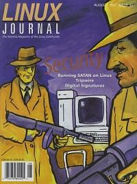

Shutdown Archive web server
Search:
Linux Journal
Issue #40/August 1997

Features
Designing a Safe Network Using Firewalls
by Paul Wouters
It is by no means necessary to purchase specialized firewall hardware or even software. A Linux server—running on a $400 386 PC—provides as much protection as most commercial firewalls, with much greater flexibility and easier configuration.
Tripping Up Intruders with Tripwire
by Kevin Fenzi
You can ensure the security of your Linux machine with this program.
TCFS: Transparent Cryptographic File System
by Ermelindo Mauriello
Think of TCFS as an extended NFS. It acts just like NFS, but allows a user to protect files using encryption.
Wrap A Security Blanket Around Your Computer
by Lee Brotzman
TCP_wrappers: a simple, elegant and effective means to safeguard your network services.
News & Articles
Programming with XForms, Part 2: Writing an Application
by Thor Sigvaldason
Security and Authentication with Digital Signatures
by Robb Shecter
Interview with Sameer Parekh
by James T. Dennis
Reviews
Product Review
Berkshire PC Watchdog
by David Walker
Product Review
XVScan
by Michael Montoure
Book Review
The Java Series
by Kirk Petersen
Book Review
The Linux Database
by Sid Wentworth
WWWsmith
A Web Crawler in Perl
by Mike Thomas
At The Forge
: Templates: Separating Programs from Design
by Reuven Lerner
Columns
Letters to the Editor
From the Editor
Stop the Presses
Linux Trademark Dispute
by Phil Hughes
New Products
System Administration
SATAN: Analyzing Your Network
by Rob Havelt
Kernel Korner
A Non-Technical Look Inside the EXT2 File System
by Randy Appleton
Linux Gazette
Big Brother Monitoring System
by Paul M. Sittler
Best of Technical Support
Archive Index
Shutdown Archive web server
Search:
Copyright © 1994 - 2018
Linux Journal
. All rights reserved.